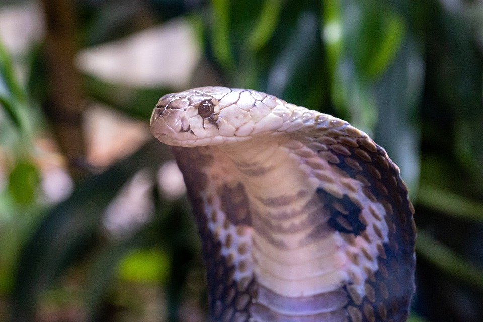
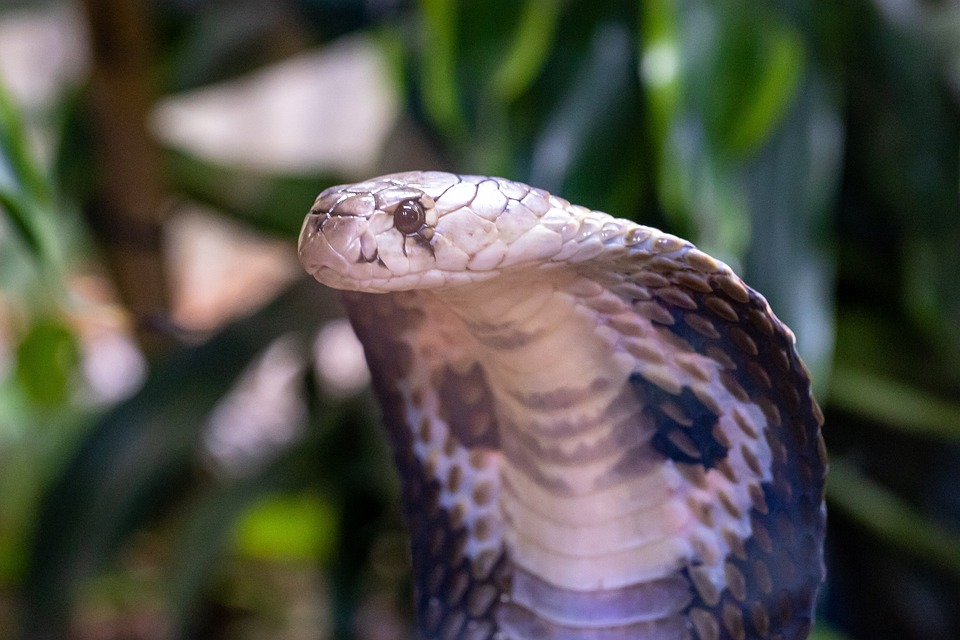

Neue Schlangenbabys
Im "Giu's Zoo" gibt es aufregende Neuigkeiten: Eine der Schlangenarten, die im Zoo beheimatet sind, erwartet bald Nachwuchs! Die Tierpflegerinnen und Tierpfleger sind aufgeregt, die Ankunft der Schlangenbabys zu erleben und arbeiten hart daran, sicherzustellen, dass die Mutter und ihre Jungen gut versorgt sind. Die Schlangen sind faszinierende Kreaturen und es gibt viel zu lernen über ihre Lebensweise und ihr Verhalten. Besucherinnen und Besucher des "Giu's Zoo" können bald die Gelegenheit haben, die Schlangenbabys zu sehen und mehr über diese unglaublichen Tiere zu erfahren. Der "Giu's Zoo" ist ein Ort, an dem die Tierwelt hautnah erlebt werden kann und es gibt immer etwas Neues und Aufregendes zu entdecken.
Neue Tiere!
Der "Giu's Zoo" ist ein Ort, an dem sich Besucherinnen und Besucher auf eine spannende Entdeckungsreise durch die Tierwelt begeben können. In Zukunft wird der Zoo noch mehr zu bieten haben, da neue Tiere in den Zoo einziehen werden! Die Tierpflegerinnen und Tierpfleger arbeiten hart daran, die Ankunft der Tiere vorzubereiten und sicherzustellen, dass sie sich in ihrer neuen Umgebung wohlfühlen werden. Die genauen Arten der neuen Tiere sind noch geheim, aber es wird erwartet, dass es sich um faszinierende und exotische Kreaturen handelt, die es in anderen Zoos nur selten zu sehen gibt. Besucherinnen und Besucher des "Giu's Zoo" können sich auf noch mehr aufregende Tiere und ein unvergessliches Erlebnis freuen. Der "Giu's Zoo" ist immer auf der Suche nach neuen Wegen, um die Tierwelt zu präsentieren und die Besucherinnen und Besucher zu begeistern.